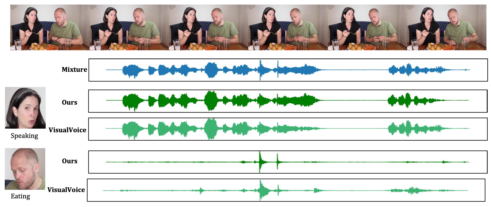

|  |
@article{xiong2022look,
title={Look$\backslash$\&Listen: Multi-Modal Correlation Learning for Active Speaker Detection and Speech Enhancement},
author={Xiong, Junwen and Zhou, Yu and Zhang, Peng and Xie, Lei and Huang, Wei and Zha, Yufei},
journal={arXiv preprint arXiv:2203.02216},
year={2022}
}